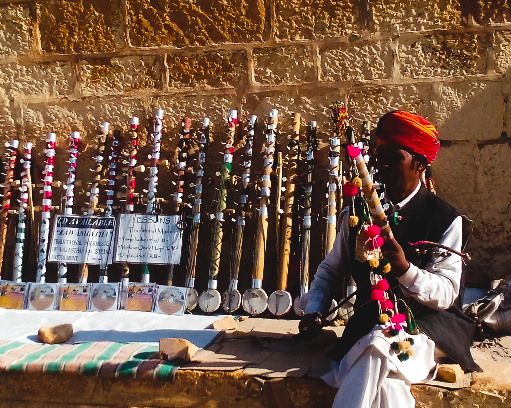
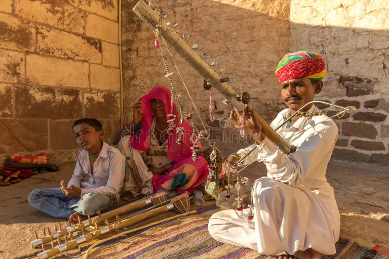

Each stroke of the bow is a prayer, each note a story whispered across generations.
The Ravanhatta, often called the “violin of the desert,” is an ancient bowed string instrument deeply rooted in the cultural fabric of Rajasthan, India, and Sri Lanka. Believed to have originated during the reign of King Ravana in Lanka, this instrument is said to have been played by the king himself in devotion to Lord Shiva. Legends narrate that after Ravana’s defeat in the Ramayana, Lord Hanuman carried the Ravanhatta to North India, where it blossomed into a part of Rajasthan’s musical identity. Crafted using simple, locally sourced materials such as bamboo, coconut shell, metal pipes, goat hide, and horsehair, it produces a hauntingly soulful tune that mirrors the spirit of the desert and its wandering bards.
Over the centuries, the Ravanhatta evolved from its mythical origins to become a cherished instrument among Rajasthan’s folk musicians, particularly the Bhopas and Nayaks, who use it to narrate epic tales such as that of Pabuji, the legendary hero of the Rabari community. The structure of the instrument—a long bamboo neck attached to a resonating gourd covered with goat skin—gives it a raw, earthy tone. Its bow, often adorned with jingling bells, adds rhythm to the melodies, creating a unique musical dialogue between story and song. Many music historians consider the Ravanhatta one of the earliest known bowed instruments and a key ancestor of the modern violin.
In today’s Rajasthan, the Ravanhatta continues to echo through the golden sands, connecting ancient mythology with living tradition. Street performers and rural storytellers keep its legacy alive, their simple yet stirring performances reminding listeners of a time when music was both devotion and storytelling. Beyond its role in folklore, the instrument stands as a symbol of resilience and artistic continuity—an enduring voice of India’s musical heritage.
 